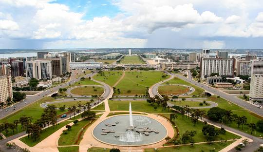
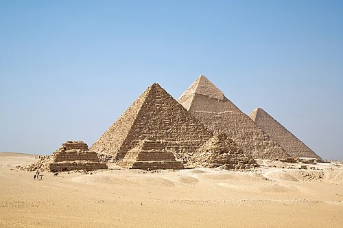
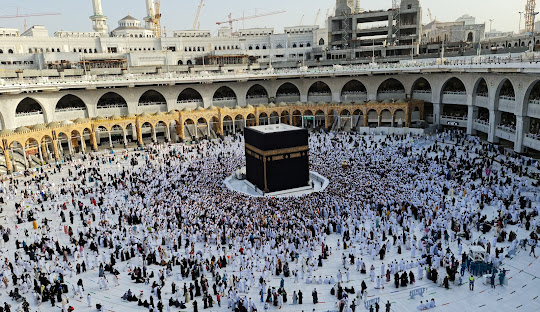

البرازيل

البرازيل، المعروفة رسميًا باسم جمهورية البرازيل الاتحادية، هي أكبر دولة في كل من أمريكا الجنوبية وأمريكا اللاتينية.
مصر

مِصرُ (رسميًّا: جُمْهُوْرِيَّةُ مِصْرَ العَرَبيَّةُ) دولةٌ عربية، عابرة للقارات، تمتد على الركن الشَّمالي الشرقي لإفريقيا والركنِ الجَنوبي الغربي من آسيا بجسر بري شكلته شبه جزيرة سَيناء. قُدِّر عدد سكانها بأكثرَ من 119 مليون نسَمة؛ لتكون الثالثةَ عشْرة بين دول العالم سكانًا، والأكثر سكاناً عربيًّا وشرقًا أوسطيًّا. يحدها شَمالاً: البحر المتوسط، وجَنوباً: السودان، وشرقاً: البحر الأحمر، ومن الشَّمال الشرقي: فِلَسطين (إسرائيل)، وقِطَاع غزة، وغرباً: ليبيا. مِساحتها نحو 1,010,408 كيلومترًا مربعًا، المأهولة منها 78,990 كم2، فهي 7.8% من مِساحتها كلِّها. ومِصر، إداريًّا، 27 محافظة، كل منها على تقسيماتٍ إدارية أصغر، وهي المراكز أو الأقسام.
لندن

لَندَن، هي عاصمة المملكة المتحدة وأكبر مدنها. تقع على نهر التمز في جنوب بريطانيا. يعيش في المدينة حوالي 8.4 مليون نسمة، منهم حوالي 2.7 في أحياء لندن الداخلية. يبلغ عدد سكانها مع ضواحيها 15,010,295 نسمة في 2012، لتكون بذلك أكبر مدن أوروبا، وأحد أهم مراكزها السياسية والاقتصادية والثقافية. ويكيبيديا
السعودية

لَندَن، هي عاصمة المملكة المتحدة وأكبر مدنها. تقع على نهر التمز في جنوب بريطانيا. يعيش في المدينة حوالي 8.4 مليون نسمة، منهم حوالي 2.7 في أحياء لندن الداخلية. يبلغ عدد سكانها مع ضواحيها 15,010,295 نسمة في 2012، لتكون بذلك أكبر مدن أوروبا، وأحد أهم مراكزها السياسية والاقتصادية والثقافية. ويكيبيديا